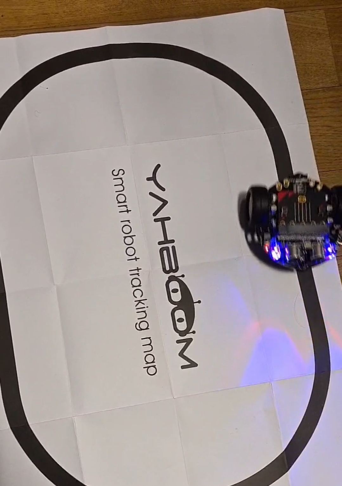
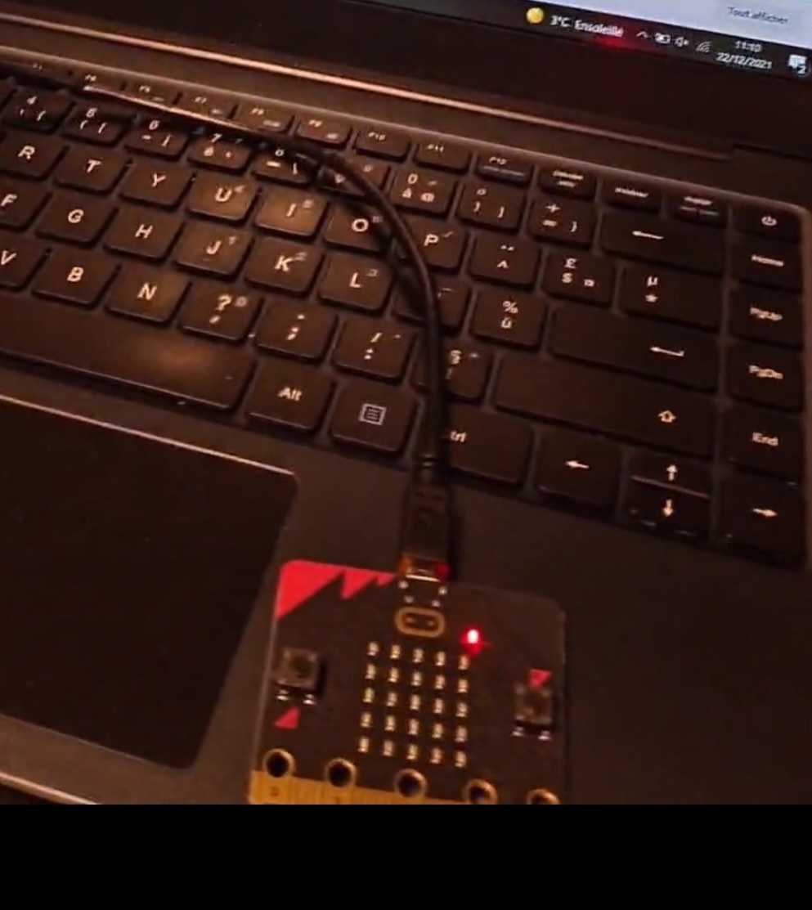

A l'issue d'un stage de programmation, j'ai expérimenter la robotique ainsi que d'autres moyens de programmer.
Voici une vidéo sur laquelle nous pouvons voir un robot que nous avons assemblé et programmé via micro:bit.

Quelques images de la programmation du robot qui parcourt une ligne noire, c'est le seul parcours qu'il ne pouvait faire pour l'instant. ( Nous sommes allés plus loin en le faisant contourner lorsqu'il rencontre un obstacle ex : homme,objet)

C'est via ceci que nous avons programmer et tout cela sur la plateforme "micro:bit".

Voyez ci-dessous le jeu "snake" que nous avons réalisé. J'étais très enthousiaste durant le projet,
J'ai hâte de reproduire des jeux, car c'est amusant et c'est également un moyen de développer sa logique. La satisfaction d'un projet fini est incroyable !
Veuillez appuyer sur "Run" pour lancer le jeu
Si le jeu s'arrête subitement, c'est que vous avez perdu ! : vous vous êtes retourné sur vous même / vous avez touché les bords.